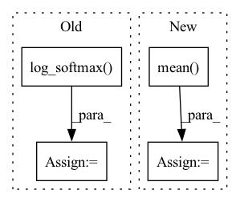

Pattern ID :7186
Before Change
return x, z
def compute_probabilities(self, x: Tensor) -> Tuple[Tensor, Tensor, Tensor, Tensor]:
log_pi = self.log_softmax( self.pi_logit)
log_prob_pi = self.prior_pi.log_prob(torch.exp(log_pi) + self.eps)
h, ldj_sum = self(x)
log_probs = self.prior_h.log_prob(h[:, None, :] - self.rho) + log_piAfter Change
probs = self.softmax(log_probs)
log_prob_pi = self.prior_pi.log_prob(probs.mean(dim=0)) // self.pi + self.eps)
self.log_pi = torch.log(probs.mean(dim=0) .detach() + self.eps)
return probs, log_probs, ldj_sum, log_prob_pi
def loss(self, x: Tensor):In pattern: SUPERPATTERN
Frequency: 3
Non-data size: 4
Instances Fragment ID: 24080574
Project Name: mics-lab/scyan
Commit Name: 8f398be18b9c7d45e3e4ab295e0c66a8b4006cbc
Time: 2022-02-21
Author: quentin.blampey@student.ecp.fr
File Name: scyan/module/scyan_module.py
M Class Name: ScyanModule
N Class Name: ScyanModule
M Method Name: compute_probabilities(2)
N Method Name: compute_probabilities(2)
M Parent Class: pl.LightningModule
N Parent Class: pl.LightningModule
M File Name: scyan/module/scyan_module.py
N File Name: scyan/module/scyan_module.py
M Start Line: 74
M End Line: 79
N Start Line: 80
N End Line: 84
Before Change
input: [N, C]
target: [N, ]
logpt = F.log_softmax( input, dim=1)
pt = torch.exp(logpt)
logpt = (1-pt)**self.gamma * logpt
loss = F.nll_loss(logpt, target, self.weight,ignore_index=self.ignore_index)
return lossAfter Change
p_t = torch.exp(-ce_loss)
loss = (1 - p_t)**self.gamma * ce_loss
if self.reduction == "mean":
loss = loss.mean()
elif self.reduction == "sum":
loss = loss.sum()
return loss
Fragment ID: 24080588
Project Name: muqiujun-ai/bert4pytorch
Commit Name: 169a074a051648e0c9cb0af37363e917da7243dd
Time: 2022-03-22
Author: zh@3752154
File Name: bert4pytorch/losses.py
M Class Name: FocalLoss
N Class Name: FocalLoss
M Method Name: forward(3)
N Method Name: forward(3)
M Parent Class: nn.Module
N Parent Class: nn.Module
M File Name: bert4pytorch/losses.py
N File Name: bert4pytorch/losses.py
M Start Line: 14
M End Line: 22
N Start Line: 12
N End Line: 20
Before Change
loss = loss.mean()
elif self.contrastive_loss_type == "softmax":
distance_matrix /= self.temperature
loss = - F.log_softmax( distance_matrix) .sum()
else:
raise ValueError(f"Contrastive loss type {self.contrastive_loss_type} not supported")
After Change
denominator = (mask * torch.exp(distance_matrix)).sum(dim=1)
softmax = numerator / denominator
loss = - torch.log(softmax)
loss = loss.mean()
else:
raise ValueError(f"Contrastive loss type {self.contrastive_loss_type} not supported")
return loss Fragment ID: 24080579
Project Name: aditeyabaral/calbert
Commit Name: b2c6c9c898a60942ede94ec997b82d864b7fdabb
Time: 2022-07-21
Author: aditeya.baral@gmail.com
File Name: calbert/SiamesePreTrainer.py
M Class Name: SiamesePreTrainer
N Class Name: SiamesePreTrainer
M Method Name: calculate_contrastive_loss(4)
N Method Name: calculate_contrastive_loss(4)
M Parent Class:
N Parent Class:
M File Name: calbert/SiamesePreTrainer.py
N File Name: calbert/SiamesePreTrainer.py
M Start Line: 153
M End Line: 157
N Start Line: 153
N End Line: 165